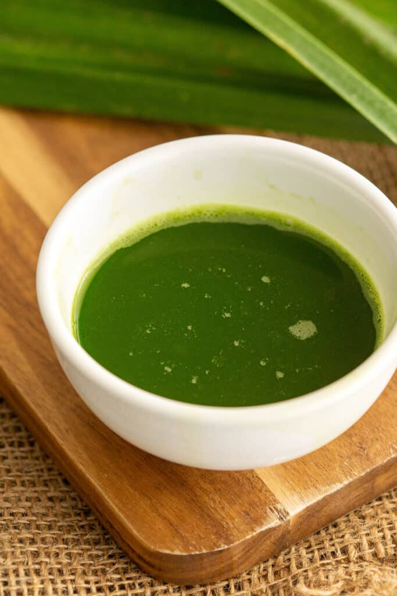

Pandan Extract

Ease your headeaches, relief your pain
Pandan leaves and water are all that stand between you and fresh pandan extract with no nasties. Grab your blender and whip this up in two minutes!
Ingredients
- 18-20 fresh pandan leaves
- ½ cup of water
Directions
- Thouroughly wash the pandan leaves to get rid of dirt and soil.
- Cut pandan leaves into small strips.
- Add pandan leaves and water into a blender and blend until it becomes a paste.
- Strain paste and store in a clean jar. Best used within a week. To keep extract for longer, portion them into an ice cube tray and freeze them.
Return to main page